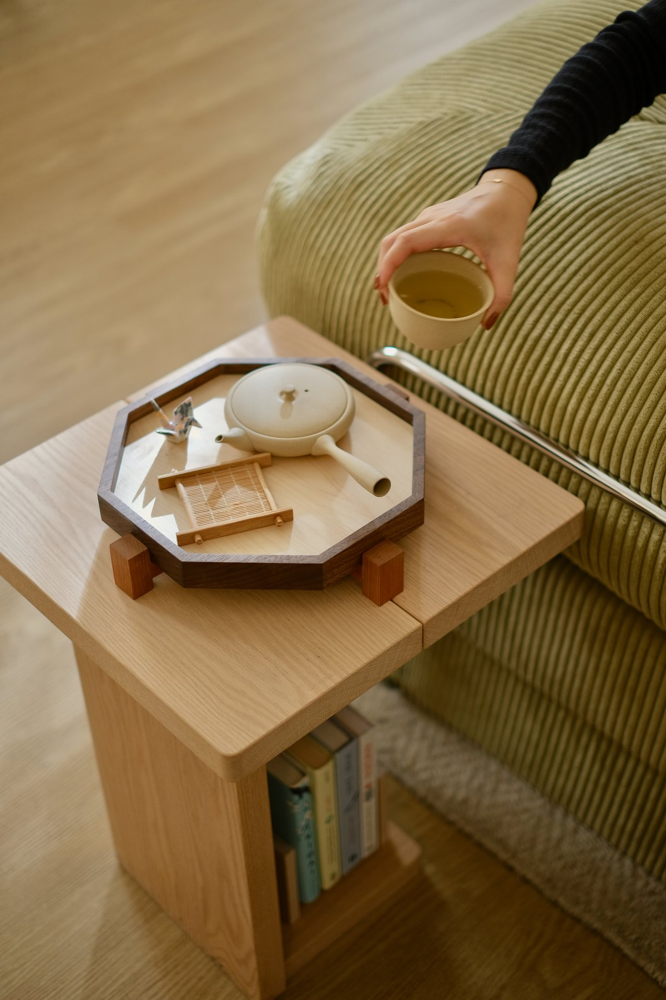
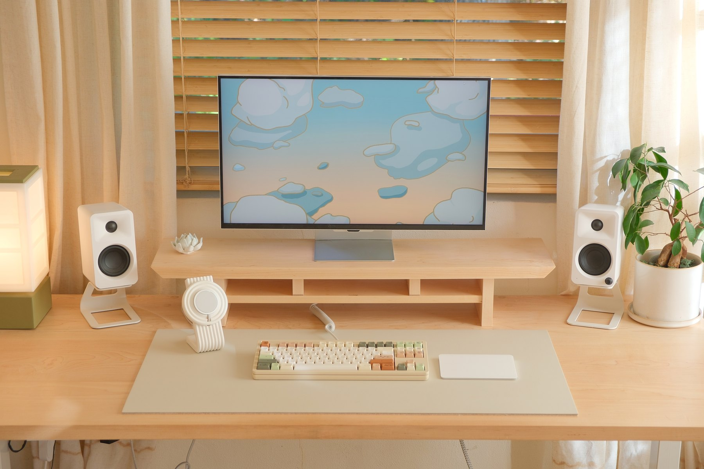
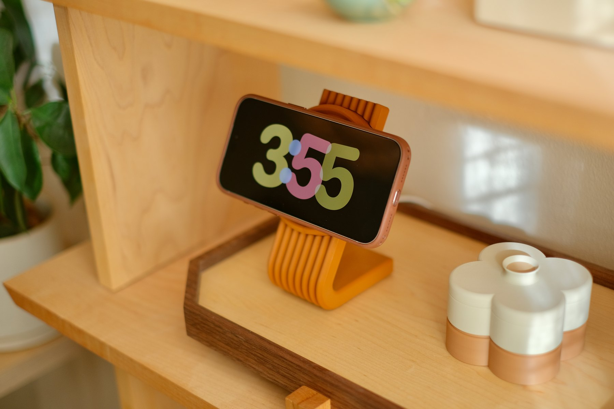
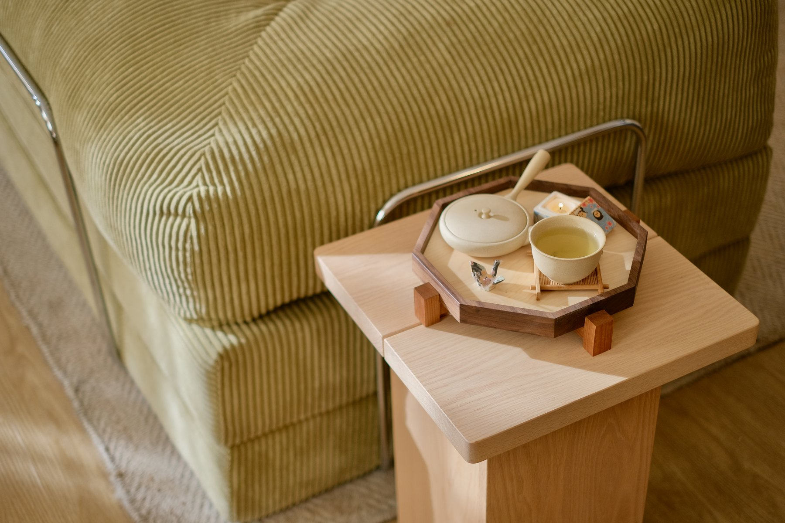
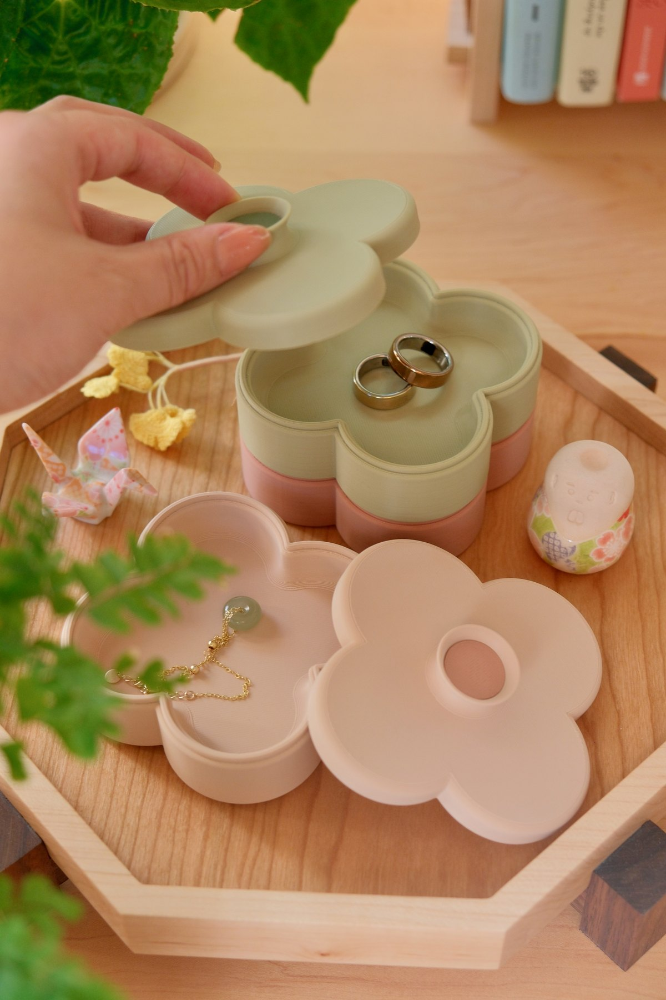
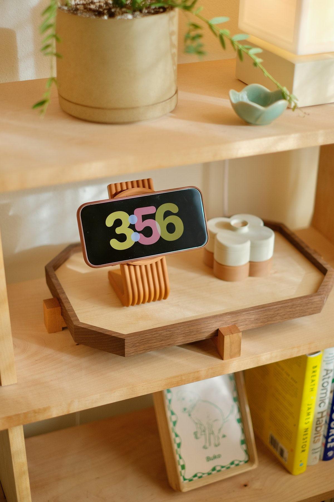

Start here
Designer · Maker · Storyteller
I design calm, warm spaces and the pieces that live in them, and share it all on YouTube so you can make a space that feels like you.

DSCF0102
DSCF1268
DSCF0144A day at my desk
A few quiet minutes with a warm cup, before the inbox gets a say.

DSCF0082
DSCF1069
DSCF0145Start here
From the October shoot
See the pieces ↗